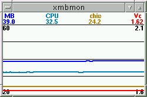
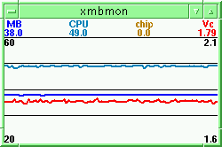

LinuxSA Mailing list archives
Index:
[thread]
[date]
[subject]
[author]
[stats]
From: Greg <grog@lemis.com>
To : Freeman, Peter (ERHS) <Freeman.Peter@saugov.sa.gov.au>
Date: Tue, 17 Dec 2002 16:55:35 +1030
Re: Temperature
On Tuesday, 17 December 2002 at 16:42:31 +1030, Freeman, Peter (ERHS) wrote:
>
>> Those are normal enough temperatures inside a computer cabinet. The
>> fan output of the cabinet of my Athlon 1700XP is 39°, and xmbmon shows
>> a processor temperature of 49°. And that's in an air-conditioned room.
>
> For what it's worth, my Athlon 2000XP varies between 50-58** with 50
> being the temp during winter. Admittedly its not in the greatest
> position for air circulation, the room isn't airconditioned, and I
> don't have any PCI slots free, so it's a little cramped inside.
>
> Quite often it'll get past 60 in this sort of weather if I'm playing
> 3D intensive games (BF1942 etc). So far I've had no problems with
> lockups and so forth as normally happens with excessive CPU
> temperatures.
In my experience, 60° is where it starts becoming a problem.
> **According to the Windoze software which came with the board (Asus
> A7V333), and also the BIOS info at startup, which incidentally is a
> few degrees lower than what the Windows monitor reports.
I think they all use the same interface. Processor temperature does
vary, though I don't have anything much to show. Attached are graphs
of the parameters for my two main machines, which unfortunately don't
show more than minor fluctuations. When a system does a lot of work
and then stops, you can often see significant differences in the
temperatures as a result.
Greg
--
Finger grog@lemis.com for PGP public key
See complete headers for address and phone numbers


--
LinuxSA WWW: http://www.linuxsa.org.au/ IRC: #linuxsa on irc.openprojects.net
To unsubscribe from the LinuxSA list:
mail linuxsa-request@linuxsa.org.au with "unsubscribe" as the subject
Index:
[thread]
[date]
[subject]
[author]
[stats]
Return to the LinuxSA Mailing List Information Page